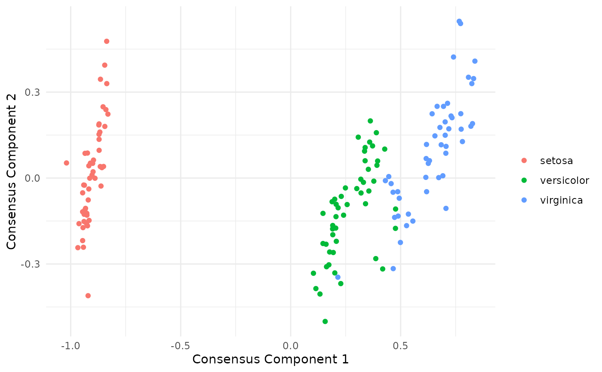
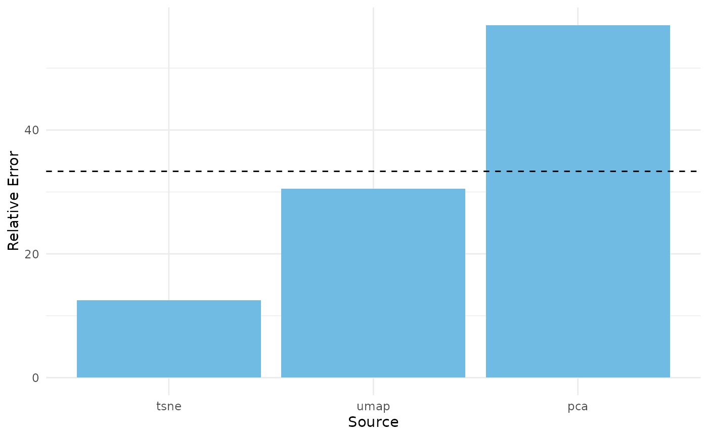
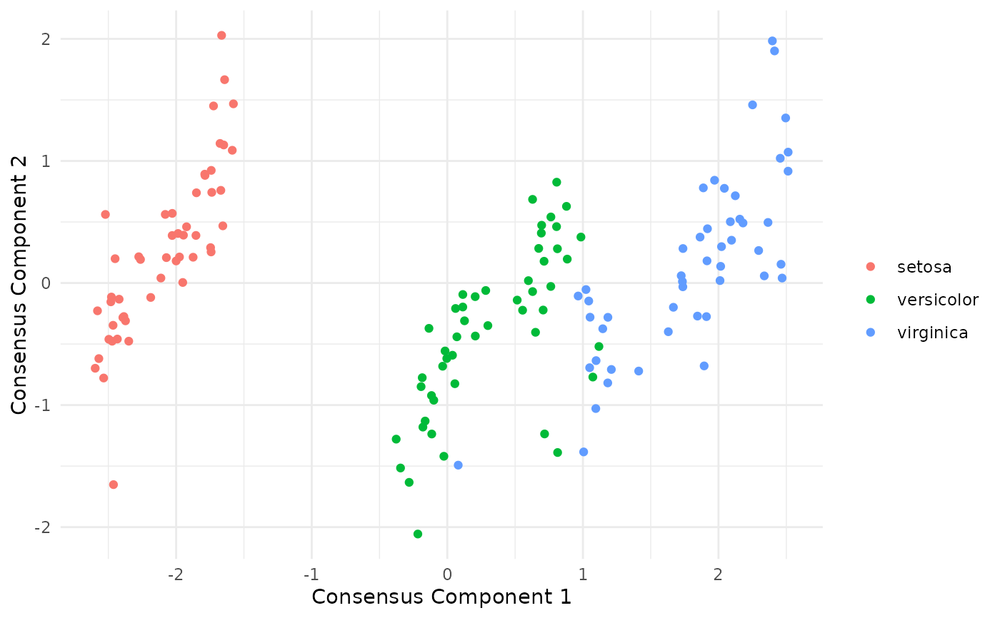
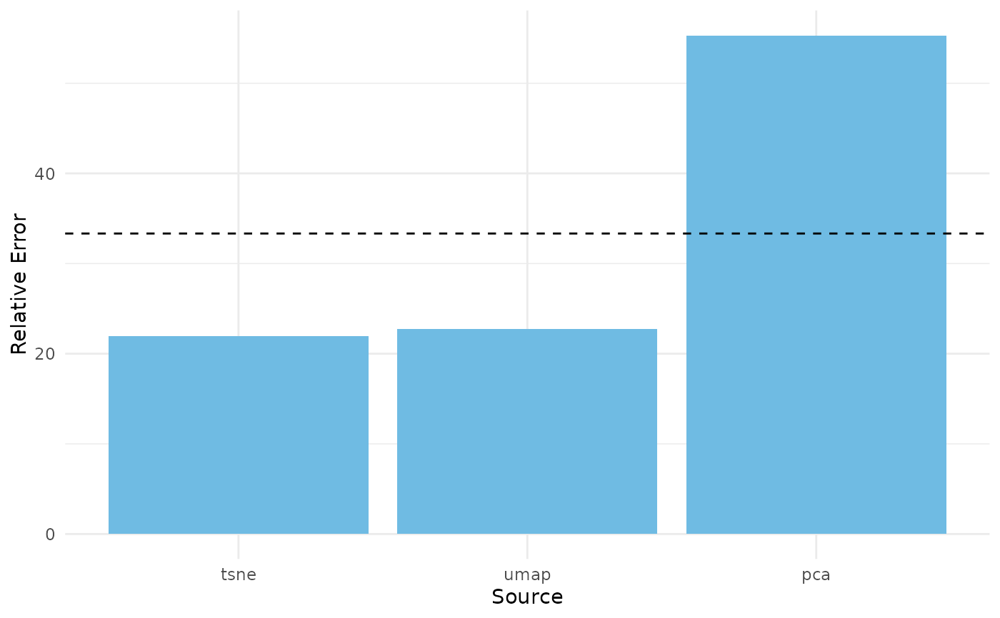
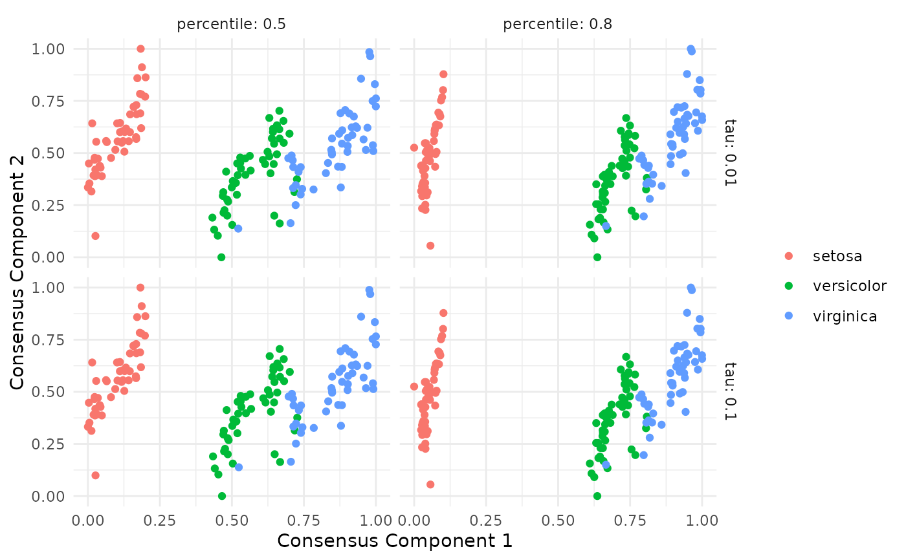
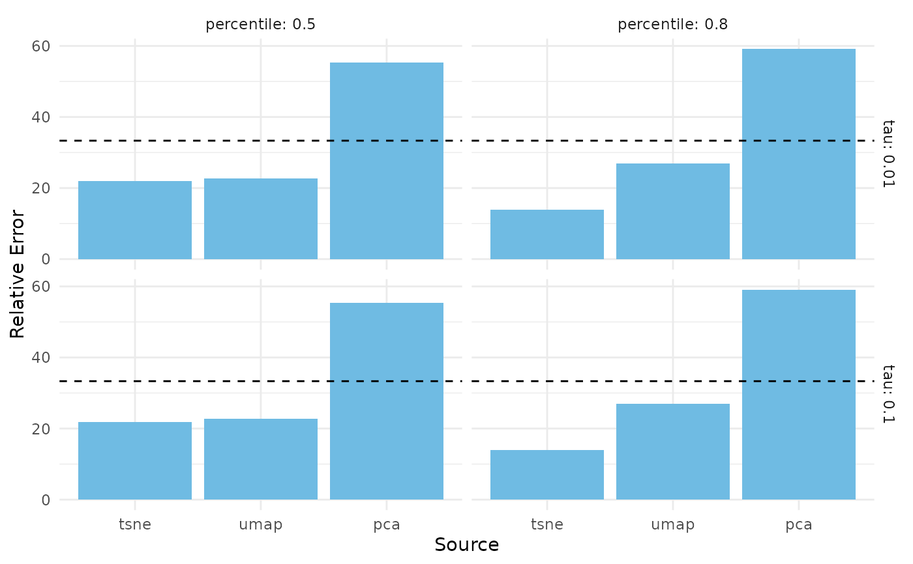

Plotting function for coMDS and locoMDS objects
plot_coMDS.RdPlotting function for coMDS and locoMDS objects
Usage
plot_coMDS(obj, color = NULL, type = c("scores", "relative_errors"), ...)Arguments
- obj
A
coMDSobject,locoMDSobject, or list oflocoMDSobjects (e.g., output oflocoMDS()with multiple hyperparameter combinations).- color
Optional vector of colors for points in the plot. Only used if type is "scores". If
NULL, no color will be applied.- type
Character string indicating the type of visualization. Can be either "scores" or "relative_errors" to show the consensus component scores or the relative errors from each input source, respectively. Default is "scores".
- ...
Additional arguments passed to the ggplot2::geom_point() if type is "scores" or ggplot2::geom_bar() if type is "relative_errors".
Examples
data(iris)
# remove duplicates so that tSNE can run
iris <- dplyr::distinct(iris)
X <- iris[, 1:4]
species <- iris$Species
# fit various dimension reduction methods
pca_scores <- prcomp(X, center = TRUE, scale = TRUE)$x
tsne_scores <- Rtsne::Rtsne(X, dims = 2, perplexity = 30, verbose = FALSE)$Y
umap_scores <- umap::umap(X, n_components = 2, verbose = FALSE)$layout
dr_list <- list(
pca = pca_scores,
tsne = tsne_scores,
umap = umap_scores
)
# fit coMDS using dimension reduction embeddings directly as input
comds_out <- coMDS(embed_list = dr_list, ndim = 2)
# plot coMDS scores
plot_coMDS(comds_out, color = species, type = "scores")

# plot coMDS relative errors
plot_coMDS(comds_out, type = "relative_errors")

# fit LoCoMDS with specific hyperparameters
locomds_out <- locoMDS(
embed_list = dr_list, ndim = 2, tau = 0.1, percentile = 0.5
)
# plot LoCoMDS scores
plot_coMDS(locomds_out, color = species, type = "scores")

# plot LoCoMDS relative errors
plot_coMDS(locomds_out, type = "relative_errors")

# fit LoCoMDS with multiple possible hyperparameters
locomds_multi_out <- locoMDS(
embed_list = dr_list, ndim = 2, tau = c(0.01, 0.1), percentile = c(0.5, 0.8)
)
# plot LoCoMDS scores for multiple hyperparameters
plot_coMDS(locomds_multi_out, color = species, type = "scores")

# plot LoCoMDS relative errors for multiple hyperparameters
plot_coMDS(locomds_multi_out, type = "relative_errors")
